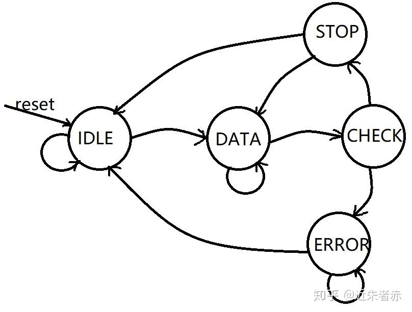
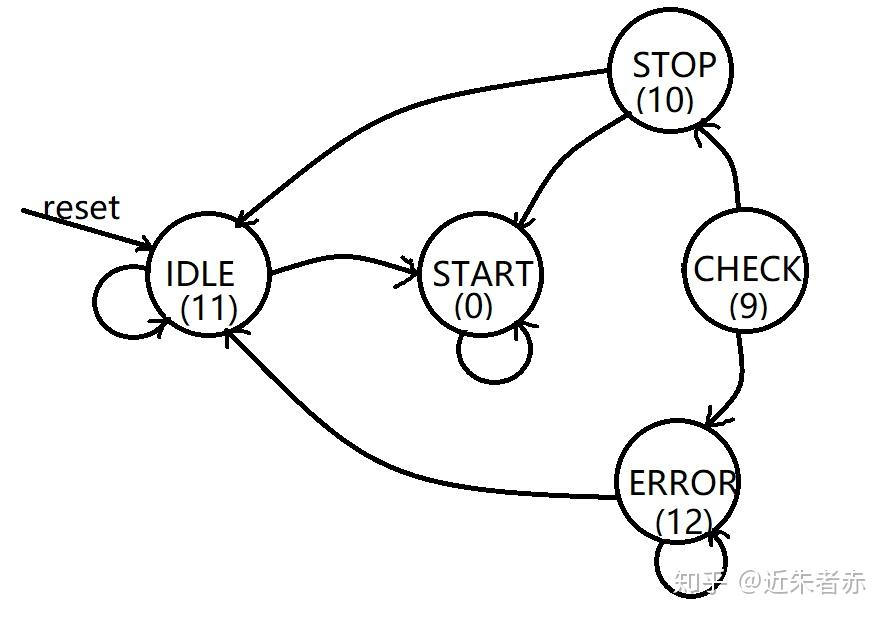

后边遇到的HDLBits：Serial Receiver系列问题以及HDLBits: PS/2系列问题的难点都差不多是状态机设计的问题了。
遇到这种比特序列通信协议的实现，通常就是两个难点：计数器的调试实现和状态机的状态设计问题。
看到知乎上不少人来讨论，这个笔记也讨论一下这个问题。
什么样的状态可以省略？
举例：Serial Receiver with Parity Checking

这个解决方案没有状态START？但却有STOP？为什么可以这样？
什么时候需要单独设计一个状态？是因为这里有一个周期的时长必须对应一个状态？还是说仅是为了方便进行判断，没有这个状态实际上也能实现？
Answer:
STOP状态和START状态的关键区别
START是”触发条件”，STOP是”验证条件”
START的作用（可以合并到IDLE）：
只是一个”触发器”，检测到0就触发接收
不需要验证什么，因为0就是起始位的定义
IDLE状态检测到0，下一周期直接进入DATA，没问题
STOP的作用（必须独立）：
需要验证收到的位是不是1
验证结果决定下一步：如果正确就结束，错误就要等待
需要”记住”验证结果来决定后续行为
状态的本质是记忆，STOP状态记忆的是”我正在验证停止位”这个事实，以及验证的结果会影响后续行为。这就是为什么STOP必须保留而START可以省略的原因！
同理，这题为parity check单独设置一个CHECK状态，不是因为这里需要判断下一个状态进入STOP还是ERROR就必须设置。
而是STOP和ERROR的周期不在同一周期！如果省略CHECK状态：
问题出现了：
1
2
3
4
5
6
7
| 周期: 8 9 10
状态: DATA → STOP → ?
↑ ↑ ↑
cnt=8 接收 此时要判断：
停止位 1. 停止位是否正确
2. 奇偶是否正确
3.
|
在周期9（STOP状态），我们刚刚收到停止位，但奇偶校验的结果此时还没有准备好！
FSM的状态设计不仅要考虑功能，还要考虑硬件的时序特性。CHECK状态就像是一个必要的”缓冲”，等待组合逻辑稳定下来。
回答刚开始提出的问题：
对于CHECK：单独设计一个状态，不是因为这里刚好有一个bit的周期，而是因为向下个状态的转移需要等待组合逻辑稳定下来。
对于STOP：单独设计一个状态，是因为需要“记住”验证结果来决定后续行为。（这也是状态需要存在的大多原因）
对于START，可以省略是因为无需判断，只要遇0一定就要进入DATA，且这个bit周期当作IDLE的一部分。
总的来说，设计硬件需要以时钟周期为主线，结合具体程序逻辑（状态机状态转换逻辑）进行状态设计，得到最优方案。
计数器的判断条件难以确定需要反复调试？
这个问题实际上还是上一个问题，在哪个周期进行判断？通常是使用无意义的数字序列给各个状态编号，但这样丢失了隐含的可以帮我我们清晰地理解问题的信息，比如说STOP和ERROR不在同一周期,可以说这是这题的难点了。解决方案有两种，要么还是用计数器仔细思考多多测试，要么进行有意义的状态编号。
第二种还是会更优雅一些，也是计数器的一种通用替代方案（事实上就是因为reg state本身就可以当作计数器用也可以赋予含义当状态用，可以说是一石二鸟了）
两种解法的示意图都记录下来：
1
2
3
4
5
6
7
8
9
10
11
12
13
14
15
16
17
18
19
20
21
22
23
24
25
26
27
28
29
30
31
32
33
34
35
36
37
38
39
40
41
42
43
44
45
46
47
48
49
50
51
52
53
54
55
56
57
58
59
60
61
62
63
64
65
66
67
68
69
70
71
72
73
74
75
76
77
|
module top_module(
input clk,
input in,
input reset,
output [7:0] out_byte,
output done
);
parameter IDLE = 0, DATA = 1, CHECK = 2, STOP = 3, ERROR = 4;
reg[2:0] state, next_state;
reg[3:0] cnt;
reg[7:0] out;
reg check;
wire odd, start;
parity parity_inst(
.clk(clk),
.reset(reset | start),
.in(in),
.odd(odd));
always@(*)begin
start = 0;
case(state)
IDLE:begin next_state=in?IDLE:DATA; start=1; end
DATA:next_state=(cnt==8)?CHECK:DATA;
CHECK:next_state=in?STOP:ERROR;
STOP:begin next_state=in?IDLE:DATA; start=1; end
ERROR:next_state=in?IDLE:ERROR;
endcase
end
always@(posedge clk)begin
if(reset)
state<=IDLE;
else
state<=next_state;
end
always@(posedge clk)begin
if(reset)
cnt<=0;
else
case(state)
DATA:cnt<=cnt+1;
default:cnt<=0;
endcase
end
always@(posedge clk)begin
if(reset)
out<=0;
else
case(next_state)
DATA:out<={in,out[7:1]};
endcase
end
always@(posedge clk)begin
if(reset)
check<=0;
else
check<=odd;
end
assign out_byte=out;
assign done=check&(state==STOP);
endmodule
|

1
2
3
4
5
6
7
8
9
10
11
12
13
14
15
16
17
18
19
20
21
22
23
24
25
26
27
28
29
30
31
32
33
34
35
36
37
38
39
40
41
42
43
| module top_module(
input clk,
input in,
input reset,
output [7:0] out_byte,
output done
);
parameter START = 0, CHECK = 9, STOP = 10, IDEL = 11, ERROR = 12;
reg [4:0] state, next_state;
reg valid, start;
always @(*) begin
start = 0;
case (state)
IDEL: begin next_state = in ? IDEL : START; start = 1; end
STOP: begin next_state = in ? IDEL : START; start = 1; end
CHECK: next_state = in ? STOP : ERROR;
ERROR: next_state = in ? IDEL : ERROR;
default: next_state = state + 1;
endcase
end
always @(posedge clk)
if (reset)
state <= IDEL;
else begin
state <= next_state;
valid <= odd;
end
always @(posedge clk)
if ((0 <= state) & (state < 8))
out_byte[state] <= in;
wire odd;
parity check(clk, reset | start, in, odd);
assign done = (valid & (state == STOP));
endmodule
|